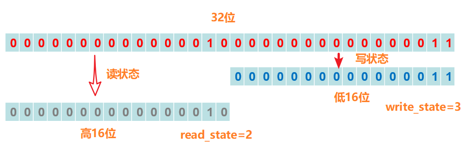

并发-锁全解
公平锁/非公平锁
公平锁指多个线程按照申请锁的顺序来获取锁。非公平锁指多个线程获取锁的顺序并不是按照申请锁的顺序，有可能后申请的线程比先申请的线程优先获取锁。可能会造成优先级反转或者饥饿现象。
可重入锁
可重入锁又名递归锁，是指在同一个线程在外层方法获取锁的时候，在进入内层方法会自动获取锁，典型的synchronized、ReentrantLock
独享锁/共享锁
- 独享锁：是指该锁一次只能被一个线程所持有。
- 共享锁：是该锁可被多个线程所持有。
互斥锁/读写锁
上面讲的独享锁/共享锁就是一种广义的说法，互斥锁/读写锁就是其具体的实现
乐观锁/悲观锁
- 乐观锁与悲观锁不是指具体的什么类型的锁，而是指看待并发同步的角度。
- 悲观锁认为对于同一个人数据的并发操作，一定是会发生修改的，哪怕没有修改，也会认为修改。因此对于同一个数据的并发操作，悲观锁采取加锁的形式。悲观的认为，不加锁的并发操作一定会出现问题。
- 乐观锁则认为对于同一个数据的并发操作，是不会发生修改的。在更新数据的时候，会采用尝试更新，不断重新的方式更新数据。乐观的认为，不加锁的并发操作时没有事情的。
- 悲观锁适合写操作非常多的场景，乐观锁适合读操作非常多的场景，不加锁带来大量的性能提升。
- 悲观锁在Java中的使用，就是利用各种锁。乐观锁在Java中的使用，是无锁编程，常常采用的是CAS算法，典型的例子就是原子类，通过CAS自旋实现原子类操作的更新。重量级锁是悲观锁的一种，自旋锁、轻量级锁与偏向锁属于乐观锁
分段锁
- 分段锁其实是一种锁的设计，并不是具体的一种锁，对于ConcurrentHashMap而言，其1.7并发的实现就是通过分段锁的形式来哦实现高效的并发操作。
- 以ConcurrentHashMap来说一下分段锁的含义以及设计思想，ConcurrentHashMap中的分段锁称为Segment，它即类似于HashMap（JDK7与JDK8中HashMap的实现）的结构，即内部拥有一个Entry数组，数组中的每个元素又是一个链表；同时又是ReentrantLock（Segment继承了ReentrantLock）
- 当需要put元素的时候，并不是对整个hashmap进行加锁，而是先通过hashcode来知道他要放在那一个分段中，然后对这个分段进行加锁，所以当多线程put的时候，只要不是放在一个分段中，就实现了真正的并行的插入。但是，在统计size的时候，可就是获取hashmap全局信息的时候，就需要获取所有的分段锁才能统计。
- 分段锁的设计目的是细化锁的粒度，当操作不需要更新整个数组的时候，就仅仅针对数组中的一项进行加锁操作。
偏向锁/轻量级锁/重量级锁
- 这三种锁是锁的状态，并且是针对Synchronized。在Java5通过引入锁升级的机制来实现高效Synchronized。这三种锁的状态是通过对象监视器在对象头中的字段来表明的。偏向锁是指一段同步代码一直被一个线程所访问，那么该线程会自动获取锁。降低获取锁的代价。
- 偏向锁的适用场景：始终只有一个线程在执行代码块，在它没有执行完释放锁之前，没有其它线程去执行同步快，在锁无竞争的情况下使用，一旦有了竞争就升级为轻量级锁，升级为轻量级锁的时候需要撤销偏向锁，撤销偏向锁的时候会导致stop the word操作；在有锁竞争时，偏向锁会多做很多额外操作，尤其是撤销偏向锁的时候会导致进入安全点，安全点会导致stw，导致性能下降，这种情况下应当禁用。
- 轻量级锁是指当锁是偏向锁的时候，被另一个线程锁访问，偏向锁就会升级为轻量级锁，其他线程会通过自选的形式尝试获取锁，不会阻塞，提高性能。
- 重量级锁是指当锁为轻量级锁的时候，另一个线程虽然是自旋，但自旋不会一直持续下去，当自旋一定次数的时候，还没有获取到锁，就会进入阻塞，该锁膨胀为重量级锁。重量级锁会让其他申请的线程进入阻塞，性能降低。
自旋锁
- 在Java中，自旋锁是指尝试获取锁的线程不会立即阻塞，而是采用循环的方式去尝试获取锁，这样的好处是减少线程上下文切换的消耗，缺点是循环会消耗CPU。
- 自旋锁原理非常简单，如果持有锁的线程能在很短时间内释放锁资源，那么那些等待竞争锁的线程就不需要做内核态和用户态之间的切换进入阻塞挂起状态，它们只需要等一等（自旋），等持有锁的线程释放锁后即可立即获取锁，这样就避免用户线程和内核的切换的消耗。
- 自旋锁尽可能的减少线程的阻塞，适用于锁的竞争不激烈，且占用锁时间非常短的代码来说性能能大幅度的提升，因为自旋的消耗会小于线程阻塞挂起再唤醒的操作的消耗。
- 但是如果锁的竞争激烈，或者持有锁的线程需要长时间占用锁执行同步块，这时候就不适用使用自旋锁了，因为自旋锁在获取锁前一直都是占用cpu做无用功，同时有大量线程在竞争一个锁，会导致获取锁的时间很长，线程自旋的消耗大于线程阻塞挂起操作的消耗，其它需要cpu的线程又不能获取到cpu，造成cpu的浪费。
读写锁（ReentrantReadWriteLock）
Java中的锁——Lock和synchronized中介绍的ReentrantLock和synchronized基本上都是排它锁，意味着这些锁在同一时刻只允许一个线程进行访问，而读写锁在同一时刻可以允许多个读线程访问，在写线程访问的时候其他的读线程和写线程都会被阻塞。读写锁维护一对锁(读锁和写锁)，通过锁的分离，使得并发性提高。
并发包中对ReadWriteLock接口的实现类是ReentrantReadWriteLock，这个实现类具有下面三个特点
①具有与ReentrantLock类似的公平锁和非公平锁的实现：默认的支持非公平锁，对于二者而言，非公平锁的吞吐量由于公平锁；
②支持重入：读线程获取读锁之后能够再次获取读锁，写线程获取写锁之后能再次获取写锁，也可以获取读锁。
③锁能降级：遵循获取写锁的情况下再获取读锁，释放写锁的顺序，即写锁能够降级为读锁
ReadWriteLock接口中只有两个方法，分别是readLock和writeLock分别可以获取到读锁和写锁，再分别可以使用readLock.lock和unlock来加锁和释放锁。
1 | // 维护了readlock和writelock |
读写锁同步器的同步状态就是读写锁的读写状态，只是读写锁的同步器需要在同步状态上维护多个读线程和写线程的状态。使用按位切割的方式将一个整形变量按照高低16位切割成两个部分。对比下图，低位值表示当前获取写锁的线程重入两次，高位的值表示当前获取读锁的线程重入一次。读写锁的获取伴随着读写状态值的更新。当低位为0000_0000_0000_0000的时候表示写锁已经释放，当高位为0000_0000_0000_0000的时候表示读锁已经释放。
从下面的划分得到：当state值不等于0的时候，如果写状态(state & 0x0000FFFF)等于0的话，读状态是大于0的，表示读锁被获取；如果写状态不等于0的话，读锁没有被获取。这个特点也在源码中实现。

写锁writeLock
①读写锁是支持重入的锁，而对于写锁而言还是排他的，这样避免多个线程同时去修改临界资源导致程序出现错误。如果当前线程已经获取了写锁，则按照上面读写状态的设计增加写锁状态的值；如果当前线程在获取写锁的时候，读锁已经被获取或者该线程之前已经有别的线程获取到写锁，当前线程就会进入等待状态。
②写锁的释放源码
写锁的释放和ReentrantLock的锁释放思路基本相同，每次释放都是减少写状态，直到写状态值为0(exclusiveCount(nextc) == 0)的时候释放写锁，后续阻塞等待的读写线程可以继续竞争锁。
读锁readLock
①读锁是同样是支持重入的，除此之外也是共享式的，能够被多个线程获取。在同一时刻的竞争队列中，如果没有写线程想要获取读写锁，那么读锁总会被读线程获取到(然后更新读状态的值)。每个读线程都可以重入的获取读锁，而对应的获取次数保存在本地线程中，由线程自身维护该值。
②获取读锁的条件：其他线程已经获取了写锁，则当前线程获取读锁会失败而进入等待状态；如果当前线程获取了写锁或者写锁没有被获取，那么就可以获取到读锁，并更细同步状态(读状态值)。
③读锁的每次释放都是减少读状态，
锁的降级
锁降级的概念：如果当先线程是写锁的持有者，并保持获得写锁的状态，同时又获取到读锁，然后释放写锁的过程。(注意不同于这样的分段过程：当前线程拥有写锁，释放掉写锁之后再获取读锁的过程，这种分段过程不能称为锁降级)。
Java锁总结
Java锁机制可归为Sychornized锁和Lock锁两类。Synchronized是基于JVM来保证数据同步的，而Lock则是硬件层面，依赖特殊的CPU指令来实现数据同步的。
- Synchronized是一个非公平、悲观、独享、互斥、可重入的重量级锁。
- ReentrantLock是一个默认非公平但可实现公平的、悲观、独享、互斥、可重入、重量级锁。
- ReentrantReadWriteLock是一个默认非公平但可实现公平的、悲观、写独享、读共享、读写、可重入、重量级锁。